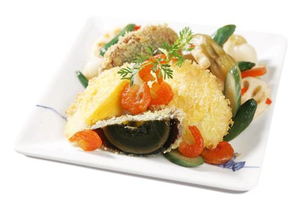

Vũ khúc trứng

- Khẩu phần 4
- Chuẩn bị 10 phút
- Thực hiện 10 phút
Nguyên liệu
- 1 quả trứng vịt bắc thảo
- 2 quả trứng vịt lạt
- 50g tôm khô
- 1 quả trứng gà
- 100g kim chi thập cẩm
- 20g bột năng
- 30g bột chiên xù
- 1/2 thìa cà phê Hạt nêm từ Thịt Thăn, Xương
Ống và Tủy - Bổ sung Vitamin A
- Dầu ăn để chiên
- Xốt chấm: 1 thìa súp xốt mayonnaise + 20g hạt
caper + 1 thìa cà phê tỏi băm + 1 thìa cà phê hành tây băm, đánh tan đều
Hướng dẫn thực hiện
- Trứng bắc thảo, trứng vịt lạt cho vào nồi luộc chín, vớt ra ngâm nước
lạnh, bóc vỏ, để nguội, dùng dao cắt làm đôi
- Đập trứng gà cho vào tô, đánh bông với Hạt nêm từ Thịt Thăn, Xương
Ống và Tủy - Bổ sung Vitamin A
- Lăn 2 loại trứng vịt qua bột năng khô, nhúng vào trứng gà, áo qua lớp
bột xù, cho vào chảo dầu nóng chiên vàng
- Tôm khô ngâm mềm, chiên sơ cho thơm
- Xếp 2 loại trứng, tôm khô và kim chi thập cẩm ra đĩa, trứng vịt lạt chấm
kèm xốt pha sẵn rất ngon.